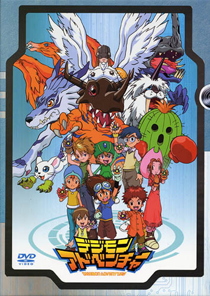

| Cover | Name | Description | Rating |
|---|---|---|---|
|
|
Pokemon the Series: XY | This pokemon series has the generation 6 pokemon. | ⭐⭐⭐ |
|  | Digimon: Digital Monsters | Better than pokemon! | ⭐⭐⭐⭐⭐ |
These are my favourite anime series. I prefer Digimon over Pokemon because the story if more focused. In Digimon there is a clear villain and the characters work together to defeat that villain. What do you think?